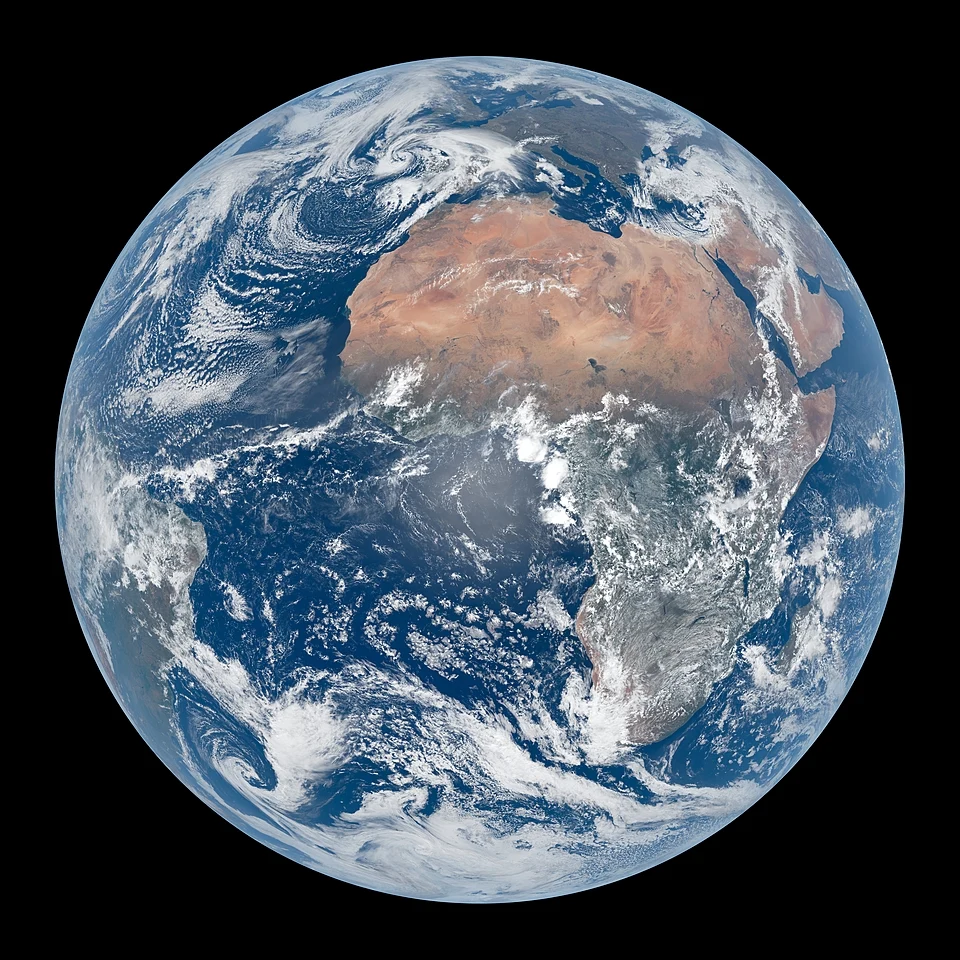

Earth is the third planet from the Sun and the only astronomical object known to harbor life. This is made possible by Earth being an ocean world, the only one in the Solar System sustaining liquid surface water. Almost all of Earth's water is contained in its global ocean, covering 70.8% of Earth's crust. The remaining 29.2% of Earth's crust is land, most of which is located in the form of continental landmasses within Earth's land hemisphere.
- Mass: 5,927,190,000,000,000 billion
- Equitorial Diameter: 12.756 km
- Notable Moons: Moon
Top 3 facts about earth
- The Earth's rotation is gradually slowing
- Earth is at centre of universe
- Earth has powerful magnitude feild
| Name | Avg Temperature |
|---|---|
| Mars | -46 Degrees |
| Venus | 462 Degrees |